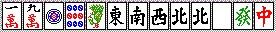
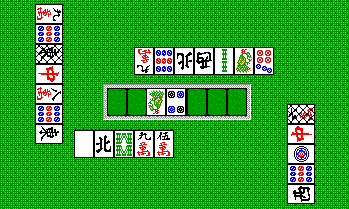

講師(笑)：とつげき東北 （とつの成績表）
【上級編：理論】
前書き：状況に応じた打ち回しをしよう
平場での役作り、ベタオリができるようになったなら、「状況を考える」ことが次のステップへの道でしょう。
マンガンを上がって振らなかったのに３位だった、一度も上がれなかったが２位だった・・・たまにあることです。
偶然そうなって得したり損したりするわけですが、この「偶然」を少しでも技術化し、操るのが上級者というものです。
極端な例で言いましょう。
オーラス、自分は最下位です。親からリーチがかかりました。自分の手はバラバラです。一発消しチーをしますか？
ここでチーをするのが中級者です。上級者なら、決して一発消しチーなどしません。
どうせ自分が振ったりリーチ者がツモれば、あがり点が何点であれ、自分の最下位が決定します。
自分が振る場合、リーチ者がツモあがる場合、他家がツモあがる場合には、一発消しにメリットはないわけです。
では他家が振り込む場合を考えて下さい。
他家が少しでも高い手に振り込めば、その分たなぼたの３位逆転の可能性が増えるでしょう。
すなわち、この状況で一発消しをするということは、自分が３位になる確率を減らしてしまうということです。
わかりますね？ これが状況に応じた打ち方の一例です。
５０ハンチャンにたった１回、この方法で順位が１上がれば、平均順位は０．０２（Ｒにして２４）違ってくるわけです。
技術１：局を流す（得点状況に応じた安手早上がり）
オーラス、自分がトップで、役のある手をテンパイしました。
例えばピンフならば、リーチする必要は全くありません。
リーチして得られるメリットは
・得点の上昇
・相手によっては降りさせられる
・役なしでも上がれるようになる
逆にデメリットは
・警戒される
・追っかけなどに対し無防備になる
・リーチ棒を支払う必要がある
ということでしょうか。
オーラストップの状況では、得点より上がることが重要ですね。またオーラスともなれば、全員が降りることは考えられませんし、仮にそうなってノーテンバップをもらっても、大した意味はありません。仮にピンフがついていれば、リーチにメリットが全くないわけです。
逆に、警戒されれば当然あがりにくくなり、その上他家の追っかけリーチなどにはまるで無防備になってしまいます。振った場合の支払いも１０００点多くなります。
こうしたことから、オーラストップの役ありリーチは損なだけ、ということになります。
ここは点数を稼ぐべき状況ではなく、局を流すべき状況なのです。
何もオーラスに限ったことではありません。
東３で、自分がトップ、２位以下との差が８０００点もあるようなら、無理にハネマンを作るより、１０００点でもいいから上がってとにかく早く局を流した方が勝ちやすいですね。
２位との差が３０００点でさえそうです。オーラスを２位との差４０００点で迎えさえすれば、振り込むとか、バイマン以上親かぶりするとか、流局バップで大損しない限り、必ず１位または２位になれるわけです。しかも、２位が４０００点以上をかせがなければトップになれるわけで、「使えない」ドラですとほとんどトップ確定したようなものでしょう。
東２でもこういうことはあるでしょう。例えば東１にマンガンをツモ上がったなら、できる限り２位との差をそのままにしてオーラスを早く迎えることが重要になりますね。それ以上は、ヤクマンを上がろうがハネマンを上がろうが同じことです。
他にも、強い人の親は早く流す、というのもある程度戦略として有効になります。
Ｒ１９００の打ち手１人、Ｒ１３００の打ち手２人が相手なら、Ｒ１９００の親は早く流し、上がる確率の少ないＲ１３００の打ち手が親の間に点数を稼ごう、というわけです。
こうした考えから、上ラン（上級ランキング卓、強い人が多い）ではみんな早上がりをよくやるわけです。
（ただ、あまり安手早上がりばかりやっていると、一回のダマ振り込みや親かぶりで４位に落ちたりと、少々不安定になります。周りが全員強いなら、あまり意識せず普段通り打つ方が良いでしょう）
さらに「局を進める」究極の方法が「差し込み」です。
わざと振ってしまうのです。
何度も使う機会はありませんが、特にオーラスでダントツの時に、わざと振り込んだりすることがしばしばあります。
ドラが枯れているリーチに対してスジ牌を切れば、メンタンに裏３としてもマンガンまでです。
８０００点振り込んでも振りトップ、というなら、ぜひとも振り込むべき場面と言えるでしょう。
トップを取る一つの指標として、オーラスを他家との差〜〜点以上で迎える、というのを持つと良いです。
私は他家との差１００００（親以外がマンガンツモってもトップ）、８０００（マンガン上がられてもトップ）、５２００（振らなければ８割方トップ）のようにおおまかに区切って考えていますが、安全な状況でオーラスを迎えるために、東３でわざと２０００点程度の役に振り込むということたまにあります。
具体的にどういう状況、どういう手牌から安上がりを目指すのかは後に書くとして、「局を流すことが必要な状況」というものを良く意識して打てるようになりましょう。
技術２：敵をしぼる（敵は３人ではない）
敵は常に３人とは限りません。
他家の上がりが自分に好都合なこともあります。
初めに書いた「オーラスで自分が最下位の時に、他家のリーチを一発消ししない」というのも、この発想から来る技術でしょう。
逆に、特定の他家が上がると困る状況もあります。
自分がトップの時、ダントツ４位の人が上がってもほとんど問題ないですが、２位の人が上がるのは困るわけです。
あるいは、トップとラスがダントツなら、麻雀はほとんど２位・３位の間での、２位争い１対１対決となります。
基本的に、点数が大きく離れた他家は、敵ではないと考えて良いでしょう。
東１でハネマンを上がったダントツトップの他家が東２でリーチをかけてきました。
無理する必要は全くありません。よほど自分の手が良くない限り、ベタオリしていれば良いのです。
放っておけば誰か振るでしょう。「２位争い」の敵が一人、脱落するチャンスです。
トップにツモられたところで、自分の立場はほとんど変わりません。
より細かく、状況が次のようになっている場合を考えます。
東３、トップが親。
トップ：３４０００
自分：３１０００
３位：２３０００
４位：２００００
ここで４位のリーチです。
自分の手はカンチャン含みの１シャンテン。
このような場合、基本的に降りていれば良いでしょう。
とりあえずの敵はトップであり、点数が比較的離れた３位、４位は敵ではないのです。
４位が上がっても、２位逆転の可能性は低いはずです。
それよりは、「敵」であるトップが振る可能性の方が相当高いと考えられます。
・ここで自分が振るということは、一気に敵が増えるということです。
オーラスを２〜４位２０００点差程度で迎えてしまえば、例え自分が２位だとしても、トップ以外の誰かが上がると３位にすぐ落ちてしまいます。トップや自分が上がってやっと２位ですから、誰かの上がる確率を単純に１／４として、平均２．５位になってしまいます。
また思いの外手が大きく、オーラスを３位・４位で迎えると絶望的になるでしょう。
・ベタオリして８０００をツモあがられても、１〜３位が２０００点差程度で並べば、トップまたはラスが上がれば自分は２位、自分が上がれば１位、３位があがった場合のみ３位、ということで、平均２位程度は守れるということです。
・ベタオリしてもしトップが振ったなら、更に期待できる順位が上がるというものです。
敵を見極めるというのは、簡単に言えば「こいつにここで上がられても問題ない（むしろメリットにもなり得る）」「こいつにここで上がられても、大きな手でなければ問題ない」「こいつがここで上がると困る」などの状況を考慮して、一発消しするのか、少々無理するのか、といったことを判断することです。
オーラスに、誰と誰になら上がられても２位を守れる、とか、自分が上がらなくても勝てる、とか、そういう状況になるように、敵を選んで戦って下さい。
しつこく例を出しましょう。とにかく「敵を絞る」ことが意識的に、常にできなければいけないからです。
オーラスに１位４２０００点 ２位（自分）３００００点 ３位２７０００点 ４位９０００点。
こんな時どうします？ 敵は３位の人だけですね。自分がトップから８０００直、などと考えて無理な手作りをするのではなく、ヤクハイのみの安上がりを目指すべきです。どんなに手作りに自信があっても、自分が８０００直する可能性より、３位の人がメンピンドラ１を上がる可能性の方が明らかに大きいと思いませんか？
少し慣れてくると、「敵でない」他家を利用できるようになります。
ダントツトップの下家が染め手を始めた。自分は比較的浮いた２位。こんな時は、ダントツトップの染め手に協力してやるのです。
無理せざるを得ない３位・４位が振ってくれればもうけもの、ということです。
１位・２位が僅差で競っていて、３位・４位もまた僅差で競っている時のオーラス。自分が１位なら、３位や４位の上がりに協力してやって良いのです。３位が１位や２位に対してもそうです。
「局を進めるべき状況」というのを先に言いましたが、敵を見定めればその状況が瞬時に判断できるようになるでしょう。
技術３：あがり点を構想する（ハイパイから何を狙うか、何を狙えば良いように局を進めるか）
あがり点を構想すると言っても、ただ点数計算を覚えて、逆転には何点必要・・・というだけではありません。
次の局に期待できる上がり点、順位を上げるために必要な状況、というものを作らなければいけません。
先ほど、オーラスを２〜４位がダンゴ状態の２位で迎えると平均２．５位が、１〜３位ダンゴの２位で迎えると平均２．０位が期待できるといった例を挙げましたが、麻雀にはこういった判断がぜひとも必要なのです。
オーラスを「敵」との差７０００点で迎えれば、例えばドラがオタカゼになったなら、なかなか自分の順位は変わらない（変えられない）ものです（相手がぶんぶん麻雀なら別ですが）。メンタンピンでようやく３９００、裏乗ってギリギリです。上がれる確率が１／４として、しっかりタンヤオまでつく好形ハイパイ・ツモに恵まれた上で、なんとか一発・裏に期待、となるのです。
仮にドラが「使いやすい」ものであっても、７０００点は簡単にとれるものではないでしょう（それが簡単にとれるならオーラスの時点でダントツトップですね 笑）。私の場合、上がりの３分の１が４ハン役ですが、この点差を埋めれる確率は単純計算で１２分の１程度になるわけです。
オーラスで上位を追う立場なら、オーラスまでに最高でも５２００以内の差に縮めておかなければなりません。逆に追われるなら、５２００以上の差を作ればかなり安全になります。
５２００未満の差なら、メンタン裏１、メンピンツモドラ１、ヤクハイホンイツ（４０符）など、比較的「作りやすい」手で逆転できるでしょう。
東３で トップ３５０００ 自分２７０００ ３位２３０００ ４位２３０００の時に自分が１０００点であがることは、「良くないこと」となるのです。オーラス トップ３４０００ 自分２８０００ ３位２３０００ ４位２３０００ になったとして、３位４位はかなり脅威ですし、トップ狙いも大変です。
一方、東３で トップ３４０００ 自分２８０００ ３位２３０００ ４位２３０００の時には、無理してまで３９００を狙うのではなく、１０００点を狙うのです。
点数の差を直感的・連続的に漠然と見るのではなくて、できやすい役とその点数を考慮して局を進めることが大切です。
私の場合、点差８０００、７７００、５２００あたりが区切りになると考えています。
３９００直で届かない８０００差、メンタンピンドラの７７００差、ドラが使えない場合のメンタン裏５２００差・・・といった具合です。
「ドラが字牌になればまず大丈夫」とか、「スジならピンフがつかない。振っても裏１で２６００だから大丈夫」とか、そういった状況を見抜き、さらにそういった状況になるよう局を進めるよう心がけましょう。
あがり点を意識的に考えるようになれば、自ずとハイパイから何を目指せばよいかが、非常に鮮明にわかるようになります。
ちなみに、例えば８０００点程度必要なら、私の役作りの方針は次のように決まっています。
・ドラが中牌の場合。
当然、ドラ・ドラそばを極力残します。
メンタンドラ２とか、メンタンピンドラなどになれば最高です。
メンピンドラ１でも裏・一発・ツモ・直期待でリーチし、成功率もかなり高いです。
ピンフができない場合は、ヤクハイホンイツドラ、チートイドラドラが基本です。
・ドラが端牌、字牌の場合。
メンタンピンできそうなら裏１や一発、ツモ、直期待でリーチ。割と成功率は高めです。
ヤクハイ２種、またはドラの色の牌が多いなら、ホンイツドラ系。これが最も成功していると思います。
ヤクハイと字牌ドラのいずれかがトイツ、もう片方が１つあるなら、ヤクハイドラ３が手軽でしょう。これも成功率は高いです。
バラバラなら仕方なく、チートイドラドラ。３種の色に数牌が分散し、トイツが３つあればかなり意識します。時々成功します。
他に、無理してチンイツとか、三色にドラを絡める、ということもありますが、成功率は低いです。
これが「８０００点必要」ではなくて５２００点や３９００点必要なら、一つ要請を減らせば良いでしょう（例えばヤクハイ・ホンイツ・ドラではなくヤクハイ・ホンイツやホンイツ・ドラに減らします）。
技術４：牌を絞る、放出する（絞ってばかりだと損しますよ〜）
ヤクハイ・オタカゼ
ある程度打ち慣れた打ち手は、やけにヤクハイを絞る傾向があるようです。
Ｒ１７５０くらいの打ち手ですと、そのままヤクハイがトイツになって、ヤクハイドラ１などで上がりに向かうケースも多いと思います。
平場の序順でのヤクハイ・字牌の処理についてですが、基本的には他家を無視して下さい。
第一打目からヤクハイを「絞る」必要は全くありません。
以下のような理由によります。
１）手がばらばらの状態からヤクハイを鳴かせる方が相手を不利にできる
ヤクハイを使って上がる場合でさえ、「２鳴き」にする場合があるわけです。まだ序順で手牌がばらばらなのにヤクハイを鳴けば、それだけ手が狭くなってテンパイしにくいからこうしたことをするのです。確かにチーやポンできるので多少はテンパイが早くなるでしょうが、例えばカンチャンが多ければ、鳴いてもテンパイは遅いものです。
いきなり一鳴きされ、しかも早上がりされる場合もありますが、そういう手ならばヤクハイを少しくらい絞ったところで大差ないことが多いはずです。手を作られてリーチされる方が相当厄介です。
２）序順は、他家がヤクハイをかぶらせている確率が低い
これは当然のことです。相手がヤクハイを使う手（ホンイツ・トイトイ・ヤクハイドラなど）を狙っている場合、後になればなるほどそれらをトイツにしてしまっている可能性が上がりますね。ホンイツなどなら、別にヤクハイは後から鳴いても先に鳴いても同じなわけで、とりたてて「ヤクハイだけを絞る」必然性はないでしょう。絞るべき状況なら、数牌もしぼってベタオリすべきです。
３）自分の手を進めるために
自分の手が好形（早い手）であればあるほど、効率よく手を進めるべきです。なぜなら、しっかりと降りる打ち方（勝てる打ち方）をする以上、自分が上がれる局で確実に上がることが必要になってくるからです。ここで手を狭めるのは愚の骨頂です。仮にポンされても、それだけ相手のアンパイが減り、しかも自分のツモが多くなることを考えれば、むしろメリットになるくらいでしょう。追っかけリーチしてくる相手と、ヤクハイドラドラでつっぱってくる相手、どちらが脅威でしょう？
ヤクハイを手に持つべき状況とは、次のような場合のみです。
１）食い仕掛けをかけられた時
食い仕掛けが始まったときこそ、ヤクハイを警戒します。具体的には、ホンイツ・トイトイ・ドラドラのいずれかをです。特に数牌からの鳴きに注意しましょう。数牌から鳴き始めているということは、（例え後づけありでも）ヤクハイだけでなく、他にドラや役がある可能性が高く、こういった手を進めさせるのは危険なのです。相手の手を推測し、こちらの手が充分煮詰まるまではヤクハイを抑え、場合によってはベタオリする必要もあるでしょう。ただ、相手の手がヤクハイホンイツとかヤクヤクチャンタ(３９００)程度ならば、それほど気にする必要はありません。むしろ「当たり牌になる前に」切ってしまうことも重要です。その後好形でテンパれば勝負、危険牌を引いてきたら降り、で充分です（もちろん、その相手と自分との関係に応じて、絞る度合いは異なります。「敵でない」相手ならそれほど絞らなくても良く、逆に「敵」であれば強く絞る必要があるでしょう）。
２）局を流したくない場合
例えばオーラスの２位で、トップ逆転が可能で、３位もそれほど脅威ではない場合です。あるいは、自分が親なのに手がバラバラ、というような場合。こういう時こそヤクハイをある程度絞る必要があるのです。
３）局を安く流したい場合
逆に、自分がトップで、局を安く流したい場合にも、ヤクハイを持つことが重要です。自分が上がるというだけではありません。他家のヤクハイがトイツになるまでとっておいてあげる、ということです。ホンイツやドラヤクハイならともかく、他の手であればリーチの方がよほど危険になります。
４）他家が好牌を早く切っている
早いリーチに対するアンパイとして一つ、またホンイツ等も考えられますから、自分の手や点数状況と相談して判断します。
５）自分が、ヤクハイを必要とする手の場合
まぁ、これは当然でしょう。
私は中途半端に「巧い」打ち手に、「ヤクハイをもっと絞れ」と言われたことがありますが(笑)、古いセオリーの有効性を判断することなく信じ込んで打ち続けていれば、強くなれないのも当然かと思います。
そもそも、平場の子で、序順からヤクハイのみとかヤクハイドラ１を狙う人は大して強くなれません（Ｒ１７５０程度で安定する人によく見られます。実際、私は以前「安手早上がり・ベタオリ打ち」で３００戦くらい打ちましたが、安定Ｒは１８００弱でした。和了率３０％、振り込み率９．５％でさえそれです）。
うまい人ならヤクハイをアンコにしたり、せめてヤクハイ待ちリーチにしたり、さもなければヤクハイトイツ落としをするものです。
平場、序順に１枚切れたヤクハイのシャンポンリーチは相当「勇気」がいるでしょう。序順で２枚出されてしまったら、手が良ければトイツ落とし、手がバラバラなら諦めるか、または他家リーチを恐れながらポンせざるをえなくなるということです。
しかし逆に、中盤以降に１鳴きテンパイとなれば、ヤクハイは大いに「使える」ものに変わってしまうのです。
平場でヤクハイを絞ることは、わざわざ相手に利益を与えることです。
ドラ
ドラの扱いも、かなり意見の分かれるところと思いますが、ドラに対するスタンスもヤクハイとさほど変わりません。
自分の手を狭めない程度に絞る、というのが一番良いです。
ただ、ドラの場合は自分も有効に使えるわけで、「絞る」というより「どう使うか」の方が重要になるでしょう。
クソ手でも、ドラが頭になりさえすれば５２００以上になるのです。がんばってもメンピンにしかならない手なら、リャンメンを崩してでもドラ引きを期待してドラソバを残す、というのが基本と言えます。
逆に、自分がドラを使わない好形（メンタンピンなど）になったら、先に切ってしまう方が良いです。他家リーチに対してドラが浮くのはあまりにも危険です。
まとめると次のように言えるでしょう。
・場を高く・遅くしたい時
ヤクハイを先切りする
ドラを手にため込む
自分が４位で３位との差が大きいとか、ピンフ系のきれいな手になっている場合はこちらです。
ヤクハイを一鳴きされると早く流されるのでは・・・と思うかもしれませんが、そういうことは稀です。
こちらがリーチ手の場合には、先に手を整えられてヤクハイ一鳴きテンパイ、というのが最悪のパターンでしょう。
ムダにヤクハイを手に止める分で受けが狭まることもありません。「自・他の手を高くしたい＝字牌を先切りする」です。
・場を安く・早くしたい時
ヤクハイを手に持つ
ドラを先切りする
オーラストップなどの場合はこちら。
ヤクハイは自分の早上がりに使えるだけでなく、他家の安上がりの補助にもなるからです。
自分のハイパイがばらばらで高い手になりそうにないのに、他家が高い手を作ってしまうのは悲しいですね(笑)。
相手のヤクハイがトイツになるのをしばらく待ってあげて、鳴かせてあげるのが一番です。
リーチされてもアンパイとして使える場合も多く、「自・他の手を安くしたい＝字牌を持つ」と言えるのです。
（書き中。ちょいとまってちょ。）
【上級編：実践】
基礎編で、基本的な攻撃・守備のやり方を学びました。
ここでは、基礎編で学んだことを実戦に応用する練習をしましょう。
実戦の状況を取り上げて、どう打つかを体験してもらいます。
必ず、実際に自分が打っているつもりで真剣に取り組んでみて下さい。
ここでは、基礎編では取り上げなかった得点状況ごとの駆け引きなどもでてきます。
この練習を通じて、確実に、Ｒ１８００超の力をつけることができると期待しています。
全て、クイタンなし、流局時常に親流れせず、後付あり、食い変えありとします。東風戦で、トップ上がりやめありです。
東１の達人になろう Ｒ１７００→Ｒ１７５０へのステップ
どうも多くの人は東１を「流すもの」だと考えている感じがします。
きれいなピンフ系の手なのに、ヤクハイのみで上がってしまったり、そうかと思えば「まだ東１だ」と危険を冒したりします。
もったいないことです。うまくすれば東１で「勝ち」を確定できます。つまり、東１でマンガンをツモ上がれれば、私なら７割方トップを守りきることができるわけです。逆に東１でマンガンに振ってしまえば、１位・２位を取ることはかなりきびしくなります。
まず親を除いて、東１・東２で平場なら、ヤクハイのみなどの安上がりをやめることです。メンゼンで上がれる可能性をつぶして１０００点で上がると、チャンスが減るだけです。最終的に１０００点差で順位が変わることはごくまれで、それも親かぶりしたかどうか、など、ほとんど偶然の結果でしょう。上がりきれればまだしも、食い初めてからリーチがかかったらどうしようもなくなります。安上がりすると残り局数が減り、流局のノーテンバップも驚異になり、勝ち負けがよりいっそう運のみに近づいてしまいます（私は平場での安上がりをやめただけで、相当成績が良くなりました）。
次に、東１こそ「降り」を徹底すべきです。リーチに対しては、こちらがリャンメンで張っているとか（攻められるのは、せいぜい好形の１シャンテン程度までです）、５２００以上の端牌シャンポンだとかでない限り、必ず降ります。
とすると、基礎編で学んだことそのままではないでしょうか。ピンフの作り方はもう万全のはずで、降りる方法も覚えましたね。
ドラを切るタイミングや、ヤクハイを手放す状況などの細かい部分まで、ここで練習してしまいましょう。
練習１
東１・親の手牌です。ドラとヤクハイや色の偏りをチェックします。
そして必ず、リャンメンのリーチ手、または食い仕掛けなら３９００点程度以上が狙える手を構想します。まずはピンフができるかどうか、で第一打を選ぶと良いと思います。
例えばこの手牌なら、メンツを作る場所が ２４マン ７８ピン ７８ソウ の３つと、残りの浮き牌の部分で、充分にピンフ系を狙うことができますね。従って、ここで白ドラ１に照準をあわせて１鳴きするのは好ましくありません。序順なら２鳴きもしない方が無難です。
そこで、ヤクハイの中や発から切り出すことになります。もしもっとバラバラの手であれば、ヤクハイ２組にするとか、ヤクハイドラドラなどを構想していきます。
この手ですとピンフが狙いやすいわけですが、「メンツを作る場所」というものに、常に気を配っておきましょう。マンズ、ピンズ、ソウズに１組ずつ、あと１組をどれかに作る、というのがメンツ作りの基礎です。例えば序順に浮き牌の３、８を切ってしまった色にメンツを２組作ることはかなり困難です。テンパってフリテンになることが多いような人は、真ん中のゴタゴタを抱え込んで浮き牌を切ってしまうタイプの打ち手ではないでしょうか。
４５５６６６７等の形からは、トイツ手などを狙うのでもない限り、さっさと６を切っていきましょう（１色に３メンツ作ろうとしないこと）。
２順目に白が出ましたが見送り、その後７順目で３マンを引きました。
トイツがいくつかかぶっているのは、ドラ表示ハイの３マンを引ける確率が高くなく、白ドラ１やチートイドラドラ等も一応考えに入れたからです。しかしここで急所の３マンを引きました。ここで２３４マン、７８９ピン、７８ソウで３メンツですから、あとは２マン、７ソウの浮き牌にひっつければ良いわけです。白の切り時ですね。
（ドラ４マン）
かなり良い形にまとまりました。わかりますか？ マンズ２４６のリャンカン＋７８ソウのメンツ候補で、どちらかに入ればテンパイです。当然、ここでは７ソウを切ります。
数順後に９ソウをツモったので、６マンを切ってダマに構えました。トイメンから３マンが出て、イーペーコードラ２の８０００点の上がりです。
なぜリーチをかけないのでしょうか？ まず、当たり牌の枚数が残りたったの２枚です。どんなに高い手であっても、平場、当たり牌２枚でリーチはかけません。この手なら、２ソウや４マンがかぶって１４マン待ち等になるのを待ちます。他家からリーチがかかっても、３マン待ち追っかけは絶対にしてはいけません。東１の追っかけリーチで当たり牌が３枚以下など、ヘボ打ちのやることです。
また、リャンメン（当たり牌５枚以上）でない４ハン手では、平場ではリーチをかけないのが基本です。警戒されるだけで、メリットはほとんどないでしょう。ヒッカケになるからリーチした方が良いのでは、と思われるかもしれませんが、序順ならともかく、中牌をある程度切った後では、ヒッカケなどほとんど無関係になります。上級者はヒッカケにあまりひっかかりませんし、中級以下なら余れば切るでしょう。メンツに組みこまれていたら悲惨です。追っかけられたらもっと悲惨です。
ポイントを繰り返します。
・ハイパイから、リーチ手、または食い仕掛けなら３９００点程度以上が狙える手を構想すること
・どこにメンツを作るかを考え、むやみに浮き牌を切らないこと（基本は１色に２メンツまで！！）
・平場では、当たり牌４枚以下の追っかけリーチをしないこと（当たり牌３枚以下の通常リーチも同様です）
練習２
東１局０本場
東・２７０００
南・２７０００北・２７０００
次の例です。ハイパイを見て、ドラの所在とヤクハイや色の偏りをチェックします。
異常なしのピンフ形ですね。メンツは４５マン、７８ピン、１２３ソウで３つ、頭は８マン。あと一つのメンツを浮き牌から作っていけば良いというわけです。では第一打をどうぞ。
なにを切りましたか？
白でしょうか、９マンでしょうか。
私はここで白を切っています。９マンでもほとんど同じだと思います。しかし、このハイパイのように、ピンフが簡単に作れそうな場合は、ヤクハイを早く切り終わった方が良いです。早い順目であればあるほど相手はヤクハイをトイツにしていない可能性が高いわけです。
直後、いきなり親が発をアンカンし、ダブ東をポンしました。これでダブ東発、なんと１１６００点確定です。
この時点でこの局の上がりを諦められなければ、とても「強く」なることはできません。
アンパイを切っていったら、たまたま早い段階でテンパった、役はメンピン表１、そういう場合はともかく、あと５順もすれば親は張っていると考えなければいけません。
さてともかくここでは何を切るでしょう。（２鳴き＋３手出し）＝リーチ ということを言いましたが、ここではまだ東をポンした直後に２ソウ（ドラ）のペンチャン落としをしているくらいですから、まだなんとか余裕はあるでしょう。今後降りていく上で、現物はぜひとも残しておきたいので、ひとまず８ソウあたりを落としておくのが良いでしょう。９マンでも構いません。

ここからベタオリです。トイメンは３鳴きですから、「リーチ」です。それも１１６００点確定ですね。
親の手を考えてみましょう。まず明らかに危険なのはホンイツです。
３鳴きもすれば、手の内に同じ色の牌を４枚溜めることは簡単ですね。この場合は発ダブ東で１１６００ですから、私ならムダにホンイツをつけることはしませんが、必ずしも自分の打ちスジ＝相手の打ちスジではありません。手の内にヤクハイがあって、ハネマン手を目指した可能性もあります。
ここで最も注意すべきは、ホンイツのマンズ、白、ドラそばあたりです。とにかくこうなったらベタオリしかないので、１ソウ、２ソウ、７ピンを切るしかないでしょう。
ツモ切り／手出しを見極めながら（少なくとも降りる場合、警戒する相手の待ちが変わったかどうかだけは必ずチェックしましょう）、ただの１度も危険牌を切ることなく、降りきることができました。
テンパイを目指していないのでマンズに目を向けることはなかったですが、気付いてみればテンパイしていました。残りツモ牌２枚なので、２マンをアンカンし、アンパイを切ってテンパイにとりました（ここで引いてきたものが例えば４マンなら、３ソウを切ってテンパイを崩します）。ちなみに、合計７枚もの当たり牌を抱え込んでいました。
南家の乱暴な打ち方には驚かされます。最終的にピンフのみフリテンでテンパイしていましたが、なぜたかだかピンフのために６マンや７マンが切れたのでしょうか（中級者は、リーチは警戒しても、鳴き系の高い手をあまり警戒しないように思います）。
トイメンは結局白を持っていなかったのですが、わざわざホンイツを付けるという時点で、あまり上手な打ち手ではないと推察できます。平場で親のマンガンクラスなら、より上がりにくくしてまでハネマンにすべきではありません。例えば１順目の７ピンを持ってさえいれば、しっかり１１６００点を上がれていたわけです。
それに対して北家は、しっかりと白も抑えていましたし、危険牌をそれほどは切っていません（とは言え、８ピンや１マンを切っていますので、その程度の打ち手ですが）。こういう部分から、相手の強さ・降り方を判断しておくと後々有効でしょう。
ポイント
・ピンフ系の好形からは、ヤクハイを先切りすること（特にダブ東は、一巡目に切ることが多いです）
・食い仕掛けでも、ホンイツやトイトイ、ドラなど、３９００以上の手に充分注意すること（中級者はリーチしか警戒しないです）
・ベタオリを決めたら、必ずツモ切り／手出しを見極め、絶対に振らないこと。ノーテンバップを恐れないこと
・東風戦、平場で８０００点クラスなら充分。上がりにくくしてまでそれ以上を絶対に狙わないこと
練習３

・・・東１の親というのに、なかなか悲しいハイパイです。
こういうバラバラの場合、ヤクハイをかぶせることも考慮に入れて打ちますが、基本はピンフ狙いです。
メンツを作るとすれば、４５マン、浮き５ピン、浮き３ソウが使えるとして、後は全くわかりません。
こういう段階で９ソウなどを切ってしまうと、後に例えば７ソウをつもっても、浮き牌として使いづらくなってしまいます。その後８ソウを引くと悲劇で、また７ソウを切ってしまうとソウズの上全体が使えなくなります。メンツを大体どのあたりに作るかが確定するまでは、なるべく数牌に手をかけない方が無難と言えます（しかしここでソウズが例えば ６９ や ６７９ の形であれば、９ソウはほとんど使いませんから、先切りも構わないでしょう）。
この手牌なら、オタカゼをばんばん切っていき、ヤクハイを残しながらピンフ、うまくいってヤクハイドラドラを狙うのが良いでしょう。
ここまで自分の手が悪い場合は特に、他家の捨て牌を良く見ておくことです。序順に中牌を出し始める他家がいたなら、その相手に対してアンパイになるような牌を残しておきます。ハイパイが悪いと、むやみに中牌を貯め込む打ち手がいますが、元々遅い手ですから先にリーチされることを常に警戒しなければいけません。自分に上がる要素がない時に振り込むのが一番最悪です。
急所の３マンを引いたのですが、残念ながらリーチがかかってしまいました。もし上家の９マンがチーできるなら、必ず一発消しをする場面です。こんな状況から上がりに向かうようでは、もうダメです。
ここでは３マンを切ります。他に安全なのは中、やや安全なのは９ソウ・東でしょう。一発は必ず避けなければならないので、３マン切りが正解ですが、中は他家のリーチのアンパイにもなりますので、できる限り保存します（もちろん、現物アンパイがなくなれば９ソウや東より先に切ります）。
できるだけ共通アンパイを残しながら、ツモ切り／手出しに気を付けてここまで降りました。
この瞬間、上家の５ピンをトイメンがロン、ピンフ３色ドラ２でした。
正直、私の３マン切りなどもトイメンに危険だったわけですが(笑)、ベタオリ時にはできるだけ共通アンパイを残して真ん中を先切りしていくことが重要です。私が仮に、リーチ者に対して同じ現物だからといって、５ピンより先に８ピンを切っていたなら、私がトイメンに振り込んでいたかもしれません。中牌は端牌より２倍近く危険なのです。
ポイント
・自分に対して相手が早そうな場合は、字牌などを残し気味にして、有効になる確率の低い数牌を先に切ること
・リーチがかかって、上がる見込みがなければ、必ず一発消しすること（ただしそれでアンパイがなくなるような場合は別）
・ベタオリする場合、同じ現物でも他家共通アンパイを残し、中牌→端牌の順で切ること
（書き中。ちょいとまってちょ。）